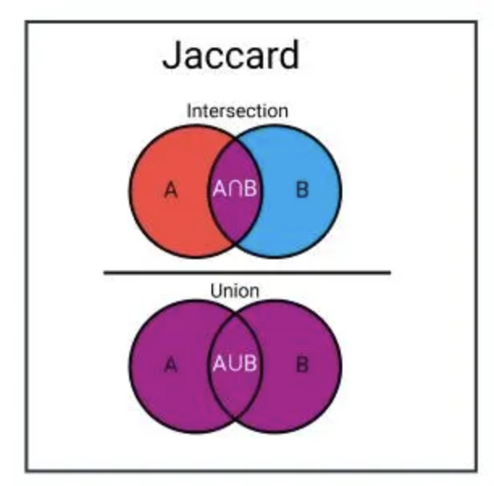

1. 什么是损失函数
损失函数衡量了模型预测结果与实际目标之间的差异或误差程度，指导模型参数的优化和训练过程。
损失函数可以分为经验风险损失函数（empirical risk loss function）和结构风险损失函数（structural risk loss function）。经验风险损失函数指预测结果和实际结果的差值，结构风险损失函数是指经验风险损失函数加上正则项。
2. 说一下了解的损失函数和各自的运用场景
2.1 用于回归的损失函数
-
MSE：
较大的差值在 MSE 计算中得到更大的权重，因此MSE对离群值非常敏感，容易受到噪声干扰，可能会导致模型过于拟合噪声。适用于当异常值对结果影响较大时，或者对大误差更关注的情况下。 $$ MSE = \frac{1}{n}\sum_{i}^{n}(y_i-\hat{y}_i)^2 $$
-
MAE：
对异常值不敏感，能够更好地应对数据中的噪声，从而使模型更健壮。但由于导数不连续，可能影响收敛速度和优化的稳定性 $$ MAE = \frac{1}{n}\sum_{i}^{n}|y_i-\hat{y}_i| $$
2.2 用于分类的损失函数
-
0-1 损失函数：当预测结果正确时为 0，错误时为 1
-
交叉熵损失函数（Cross-Entropy Loss）：
适用于二分类（sigmoid）和多分类（softmax）问题，对于错误分类的惩罚较大，容易受到类别不平衡的影响。 $$ CE = -\frac{1}{n}\sum_{i}^{n}{y_i\log p_i} $$ 当用于二分类时， $$ BCE = -\sum_{i}^{n}{[y_i\log p_i+(1-y_i)\log(1-p_i)]} $$
-
指数损失函数：
与交叉熵损失函数不同，指数损失函数对于误分类的样本有更大的惩罚，因此对错误分类的样本更加敏感。 $$ L = \exp(-y\cdot\hat{y}) $$
-
Hinge Loss：
常用于支持向量机（SVM）等算法中，用于二分类问题。它基于间隔的概念，鼓励模型将正确类别的预测值与错误类别的预测值之间的间隔最大化。 $$ L = max(0,1-y\cdot\hat{y}) $$
2.3 用于分割的损失函数
-
Jaccard/IoU Loss： $$ L_{IoU}=1-IoU=1-\frac{|A\cap B|}{|A\cup B|}=1-\frac{|A\cap B|}{|A|+|B|+|A\cap B|} $$
 -
Dice 损失：
衡量两个样本（ A 和 B ）的重叠部分。
TP: True Positive，GT 和分割掩码 S 之间的交集区域
FP: False Positive，GT 外的分割掩码 S 区域
FN: False Negative，分割掩码外的 GT 区域
$$ L_{Dice}=1-Dice=1-\frac{2\cdot|A\cap B|}{|A|+|B|}=1-\frac{2\cdot TP}{2\cdot TP+FP+FN} $$
2.4 用于检测的损失函数
-
Smooth L1 Loss (Huber Loss)：
增强了 MSE 对离群点的鲁棒性。 $$ L_{smoothL1}(x)= \begin{cases} \frac{1}{2}x^2,\quad |x|<\beta\\ \beta\cdot(|x|-\frac{1}{2}\beta) \end{cases} $$
-
Focal Loss：
Focal Loss 主要用于解决类别不平衡问题，能够增强对难分类样本的关注。 $$ FL(p_t)=-\alpha_t(1-p_t)^\gamma\log(p_t) $$
- 调制因子 $\gamma$ 用于减低易分样本的损失贡献，无论是前景类还是背景类，$p_t$ 越大，就说明该样本越容易被区分，调制因子也就越小；
- $\alpha_t$ 用于调节正负样本损失之间的比例，前景类别使用 $\alpha_t$ 时，对应的背景类别使用 $1-\alpha_t$；
3. 交叉熵损失和最大似然函数的联系
- 最大似然函数：用于估计模型参数，寻找使观察数据出现概率最大化的参数值。
- 交叉熵函数：衡量两个概率分布之间的差异，常用于评估模型预测与真实标签之间的差异。
- 联系：最小化交叉熵函数的本质就是对数似然函数的最大化。
4. 在用 sigmoid 作为激活函数的时候，为什么要用交叉熵损失函数，而不用均方误差损失函数
-
收敛快
对于 MSE，有 $$ L_{MSE} = \frac{1}{2n}\sum_{x}{(a-y)^2} $$ 其中 y 为标签，a 为实际输出： $$ a=\sigma(z);\quad z=wx+b $$ 分别求 w 和 b 的梯度，有： $$ \frac{\partial L}{\partial w}=\frac{\partial L}{\partial a}\cdot\frac{\partial a}{\partial z}\cdot\frac{\partial z}{\partial w}=(a-y)\cdot\sigma’(z)x $$ $$ \frac{\partial L}{\partial b}=\frac{\partial L}{\partial a}\cdot\frac{\partial a}{\partial z}\cdot\frac{\partial z}{\partial b}=(a-y)\cdot\sigma’(z) $$
可见，梯度大小与 $\sigma’(z)$ 有关，若使用 sigmoid 函数，则两端梯度很小，参数更新缓慢。
对于交叉熵损失函数，有 $$ L_{CE}=-\frac{1}{n}[y\log a+(1-y)\log(1-a)] $$ 若 $a=\sigma(z)$，那么有 $$ \begin{align*} \frac{\partial L}{\partial a} &=-\frac{1}{n}\sum_{x}{[\frac{y}{a}-\frac{(1-y)}{(1-a)}]}\\ &=-\frac{1}{n}\sum_{x}{[\frac{y}{a(1-a)}-\frac{1}{1-a}]} \end{align*} $$ 因此，有 $$ \begin{align*} \frac{\partial L}{\partial w} &=\frac{\partial L}{\partial a}\cdot\frac{\partial a}{\partial z}\cdot\frac{\partial z}{\partial w}\\ &=-\frac{1}{n}\sum_{x}{[\frac{y}{\sigma(z)(1-\sigma(z))}-\frac{1}{1-\sigma(z)}]}\sigma’(z)x\\ &=-\frac{1}{n}\sum_{x}{[\frac{y}{\sigma(z)(1-\sigma(z))}-\frac{1}{1-\sigma(z)}]}\sigma(x)(1-\sigma(z))x\\ &=-\frac{1}{n}\sum_{x}{(y-a)x} \end{align*} $$ 因此，梯度更新受 $y-a$ 的影响，当误差大的时候，梯度更新快。
-
凸优化性：
-
梯度消失问题：Sigmoid 函数在输入较大或较小的情况下，梯度会趋近于零，导致训练过程中的梯度消失问题。而交叉熵损失函数的梯度只与误差大小有关。
5. 关于交叉熵损失函数（Cross-Entropy）和平方损失（MSE）的区别
-
定义不一样
-
参数更新速度不一样：
均方差损失函数受 sigmoid 函数影响，导数更新缓慢。
交叉熵损失函数参数更新只和误差有关，当误差大的时候，权重更新快；当误差小的时候，权重更新慢。
-
使用场景不一样
MSE 适合回归问题，CE 适合分类问题。
6. BCE 和 CE 的区别
- $BCE(y,\hat{y})=-[y\cdot\log(\hat{y})+(1-y)\cdot\log(1-\hat{y})]$
- 适用于二分类任务
- 通常与 sigmoid 一起使用：$sigmoid(x)=\frac{1}{1+e^{-z}}$
- $CE(y,\hat{y})=-\sum{y\cdot\log(\hat{y})}$
- 适用于多分类任务
- 通常与 softmax 一起使用：$softmax(x)=\frac{e^{-z_i}}{\sum_{k=1}^{n}{e^{-z_k}}}$
7. 为什么交叉熵损失函数有 log 项
通过最大似然估计的方式求得交叉熵公式，这个时候引入 log 项。这是因为似然函数（概率）是乘性的，而 loss 函数是加性的，所以需要引入 log 项 “转积为和”，而且也是为了简化运算。
8. 交叉熵损失函数的设计思想是什么
- 信息论的概念： 交叉熵是基于信息论中的熵和相对熵（KL 散度）的概念。熵用于度量随机事件的不确定性，而相对熵用于衡量两个概率分布之间的差异。在分类任务中，我们希望通过损失函数来最小化预测结果与真实标签之间的差异，从而减少不确定性并增加对正确类别的置信度。
- 最大似然估计： 交叉熵损失函数可以解释为最大似然估计的一种形式。在分类任务中，我们可以将模型的输出看作是对样本属于各个类别的概率分布的估计，而真实标签则表示样本的真实分布。通过最大化样本真实分布的似然概率，可以得到与真实标签最匹配的模型参数，从而提高分类准确性。
- 反映预测概率与真实标签之间的差异： 交叉熵损失函数的计算方式可以将模型的预测概率与真实标签之间的差异量化为一个标量值。通过最小化交叉熵损失函数，模型可以进行梯度下降优化，调整参数以使预测概率更接近真实标签。
9. IoU 的计算与实现
$$ IoU=\frac{|A\cap B|}{|A\cup B|}=\frac{|A\cap B|}{|A|+|B|-|A\cap B|} $$
IOU（Intersection over Union），交集占并集的大小。其实现如下：
def IoU(A: Bbox, B: Bbox) -> int:
"""
计算两个矩形框的IOU（Intersection over Union）
参数:
- Bbox: 矩形框的坐标，格式为 (x0, y0, x1, y1)
返回值:
- iou: 两个矩形框的IOU值
"""
H = min(A.x1,B.x1)-max(A.x0,B.x0) # 右侧小的横坐标-左侧大的横坐标
W = min(A.y1,B.y1)-max(A.y0,B.y0)
if H<=0 or W<=0:
return 0
C = H*W
S = (A.x1-A.x0)*(A.y1-A.y0)+(B.x1-B.x0)*(B.y1-B.y0)
return C/(S-C)
10. mIoU 的计算与实现
Mean Intersection over Union(MIoU， 均交并比)，为语义分割的标准度量。
计算时在每个类上计算IoU，然后取平均。
11. 如何选择 MAE 和 MSE
-
异常值敏感性：
MSE 对异常值/离群值敏感，若数据中包含噪声或明显的异常值，MAE 会比 MSE 更加合适
-
中位数优化：
MAE 在优化过程中更倾向于找到中位数，而 MSE 更倾向于找到平均数，对于异常值而言，中位数比平均数更为鲁棒
-
梯度更新：
MAE 存在梯度始终相同的问题，即使对于很小的损失值，梯度也很大，需要调整学习率；而 MSE 使用固定的学习率也能有效收敛
12. 什么是 Focal Loss
Focal Loss 主要用于解决类别不平衡问题，主要思想是对难样本赋予更大的权重，对于易于分类的样本赋予较小的权重。 $$ FL(p_t)=-α_t\cdot(1 - p_t)^γ\cdot\log(p_t) $$ 其中 $p_t$ 为预测概率，$\alpha_t$ 是平衡因子，$\gamma$ 是调制参数。
当 $p_t$ 趋近 1 时，说明他是易分样本，$(1-p_t)^\gamma$ 趋近于 0，对损失贡献较小；
$\alpha_t$ 用于解决类别不平衡问题，用于指定每个类别的权重，对于出现较少的类别，具有较大的权重。例如，在二分类中，前景使用 $\alpha_t$ 时，背景为 $1-\alpha_t$。
13. 什么是 InfoNCE Loss
InfoNCE（Normalized Information Neural Estimation）Loss 是一种用于训练自编码器、对比学习和表示学习模型的损失函数。它试图最大化正样本对之间的互信息，并最小化与负样本对之间的互信息。
InfoNCE loss 公式如下： $$ L=-\log\cdot\frac{\exp(q\cdot k_+/\tau)}{\sum_{i=0}^{k}(q\cdot k_i/\tau)} $$ $q,k_+$ 互为正样本对，在交叉熵里，k 表示类别总数，在 InfoNCE 里，k 表示负样本数量。本质是一个 k+1 分类任务，将 q 分类到 $k_+$ 类。
温度系数 $\tau$ 类似知识蒸馏里温度系数的作用，$\tau$ 越大，logits 分布越平滑，对比损失将所有负样本一视同仁会，太过关注更困难的负样本；$\tau$ 越小，logits 分布越集中，模型关注与正样本样本相似的难负样本，给予难负样本更大的梯度与正样本分离，但与正样本相似的难样本可能是潜在的正样本，可能导致模型难收敛或泛化性变差。
即温度系数决定了对比损失对困难负样本的关注程度。
Pytorch 类代码实现如下：
14. 什么是 KL 散度
KL 散度（Kullback–Leibler divergence，KLD）是一种统计学度量，表示的是一个概率分布相对于另一个概率分布的差异程度，在信息论中又称为相对熵（Relative entropy）。
对于随机变量 $\xi$，存在两个概率分布 $P,Q$，当变量为离散或连续时，KL 散度的定义如下： $$ \mathbb{D}_{KL}(P||Q)=\sum{P(x)\log\frac{P(x)}{Q(x)}} $$
$$ \mathbb{D}_{KL}(P||Q)=\int P(x)\log\frac{P(x)}{Q(x)} dx $$
其中，$Q(x)$ 为理论概率分布，$P(x)$ 为模型预测概率分布。KL 值越小，表明两个分布越接近。
KL 散度基本性质如下：
- 非负性：$\mathbb{D}_{KL}\geq0,\mathbb{D}_{KL}=0$ 当且仅当 $P=Q$。
- 仿射不变性：$y=ax+b$，$\mathbb{D}_{KL}(x)=\mathbb{D}_{KL}(y)$
- 非对称性：$\mathbb{D}_{KL}(P||Q)\neq\mathbb{D}_{KL}(Q||P)$
15. 为什么分类用交叉熵不用 MSE
同问题4，分类任务需要通过 sigmoid 或 softmax 将输出映射到 [0,1]，若使用 MSE，则梯度与激活函数的梯度有关，可能导致梯度消失或梯度爆炸，导致训练困难。而交叉熵损失则不会出现这个问题。